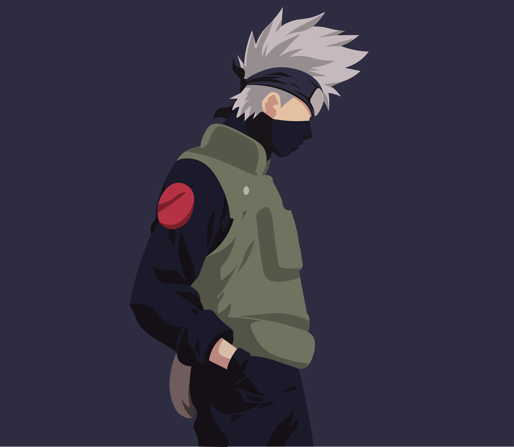
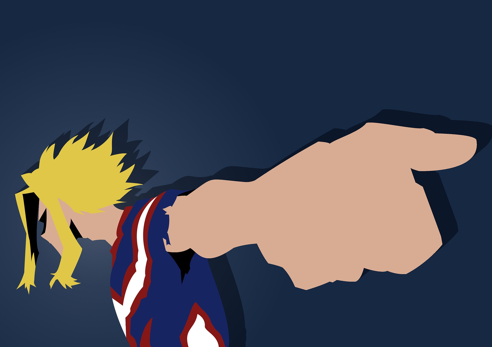
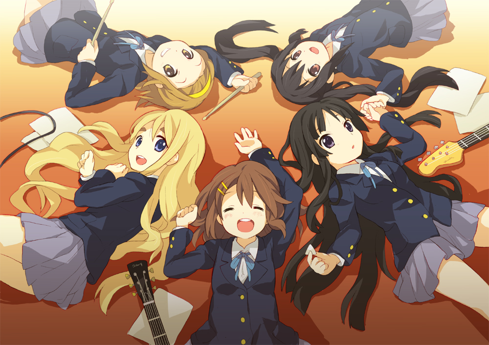

A continuacion se muestran las sinopsis y otros datos de los 3 animes que estoy siguiendo.
Naruto Shippuden

Sinopsis
Pasados dos años y medio de entrenamiento con Jiraiya, Naruto Uzumaki regresa a la aldea oculta
de la
hoja, donde se reúne con sus viejos amigos y conforma de nuevo el Equipo 7. Debido a la ausencia
de
Sasuke, aparece un nuevo personaje llamado Sai el cual retoma su lugar. En esta secuela podremos
notar como los compañeros de Naruto han madurado con respecto a su desempeño previo, mejorando
la
mayoría de estos en su nivel. Durante su entrenamiento con Jiraiya, Naruto aprendió a controlar
un
poco de la chacra del Kyubi. Lo contrario a la serie original, dónde sólo desempeñó un papel
secundario, la organización Akatsuki asume el papel antagónico principal en Naruto Shippuden,
buscando como objetivo principal el capturar a todos los poderosos monstruos Biju.
Boku No Hero Academia

Sinopsis
Las personas no nacen igual. El protagonista de esta historia es uno de esos casos raros que
nacen
sin superpoderes, pero esto no le impedirá perseguir su sueño: ser un gran héroe como el
legendario
All-Might. Para convertirse en el héroe que quiere ser, se apuntará a una de las academias de
héroes
más prestigiosas del país: Yueiko. Con la ayuda de su ídolo, All-Might, ¿podrá convertirse en un
verdadero héroe?
K-ON!

Sinopsis
La historia base se centra en cuatro chicas que asisten a su primer año de preparatoria, en
donde
tenemos a Yui Hirasawa y su impaciencia en la búsqueda de un club del cual participar. Por otro
lado
tenemos a Ritsu Tainaka (baterista) quien le propone a su mejor amiga Mío Akiyama (bajista),
inscribirse juntas en el club de música ligera del instituto, pero desafortunadamente se enteran
que
está próximo a ser cerrado debido a que todos sus miembros se habían terminado de graduar el año
anterior. Debido a que el mínimo permitido para aprobar un club es de 4 integrantes, Ritsu y Mío
tratan desesperadamente de conseguir que el club no sea cerrado, por lo que en el intertanto
lograrán reclutar a Tsumugi Kotobuki quien les indica que solo sabe tocar Teclado. Esto
significa
que solo hace falta un miembro más para tener nuevamente el club en funcionamiento y es aquí
donde
luego de una larga espera Yui se decide finalmente por un club, precisamente el de música ligera
y
con esto salvándolo de la extinción. Desafortunadamente el club requiere de la pieza clave de
toda
banda musical: el guitarrista, y Yui no tiene experiencia alguna con ningún instrumento.